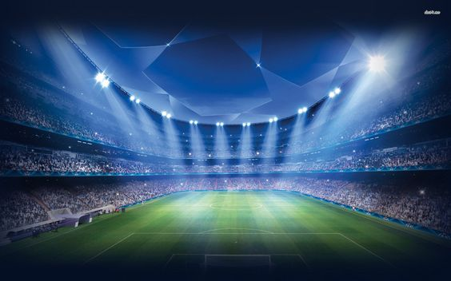

Te explicamos qué es el fútbol y cuáles son las principales reglas de este juego. Además, cómo debe ser el campo de juego y el fútbol de sala.

¿Que Es Fútbol ?
El fútbol se define en primer lugar como un juego que incluye dos contrincantes y un árbitro con la capacidad de imponer justicia imparcial. Cada contrincante está compuesto por un equipo de 11 jugadores en campo de juego cada uno, con la opción de incluir jugadores suplentes en el transcurso del partido de fúbol.
OBJETIVO
El objetivo es hacer rodar un balón esférico con el fin de anotar un punto (GOL), cuya anotación es válida al cruzar la línea límite del arco contrario. Cada punto logrado es conocido como gol, por lo tanto el equipo que más goles sume en el transcurso de 90 minutos –tiempo neto de un partido- será el ganador. Cada equipo deberá de incluir en su plantilla un arquero o portero, único jugador capaz de tocar el balón con las manos y con la tarea de impedir que el balón cruce su propio arco; un grupo de defensores; un grupo de volantes y finalmente un grupo de delanteros. Las tácticas de cada plantilla pueden variar en preferencia del director técnico a cargo del equipo de fútbol.